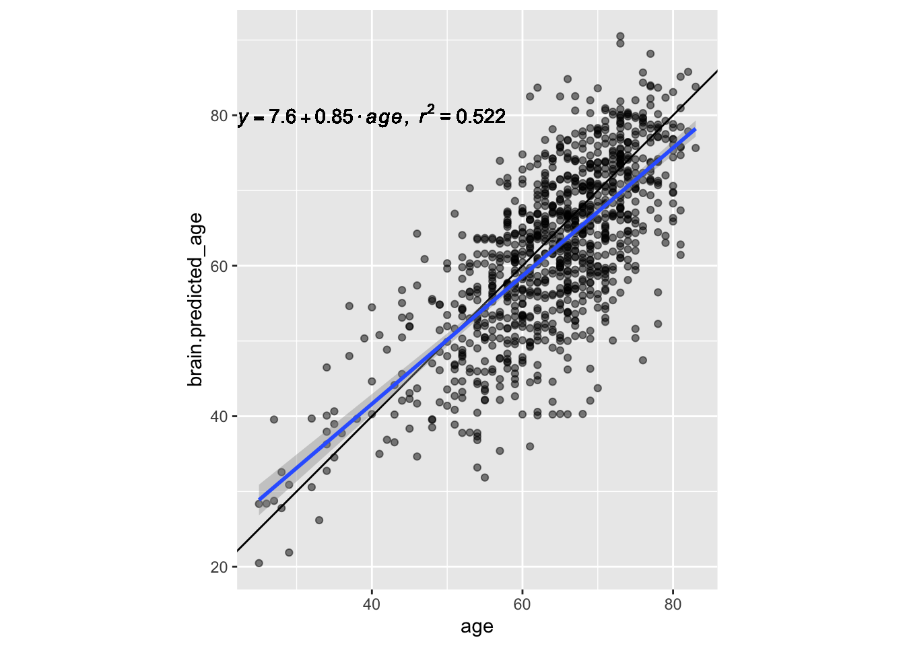
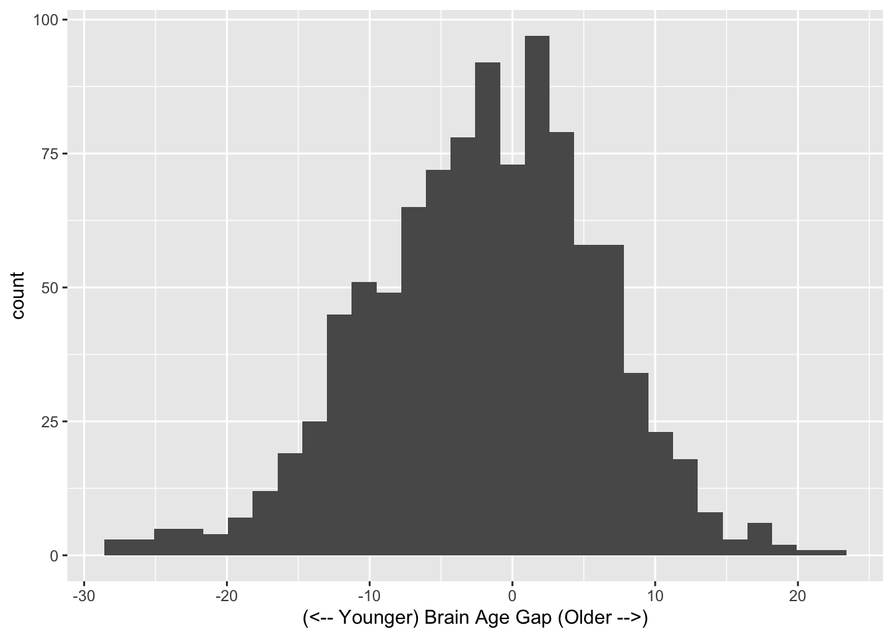
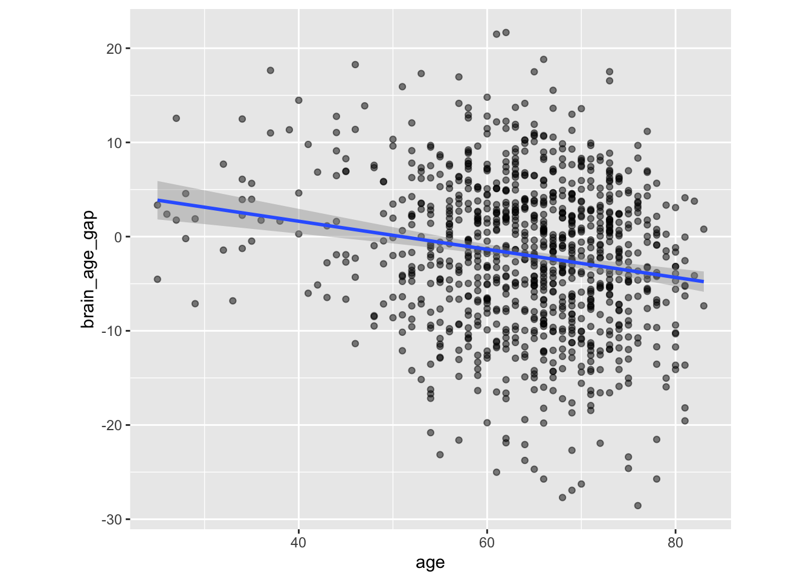
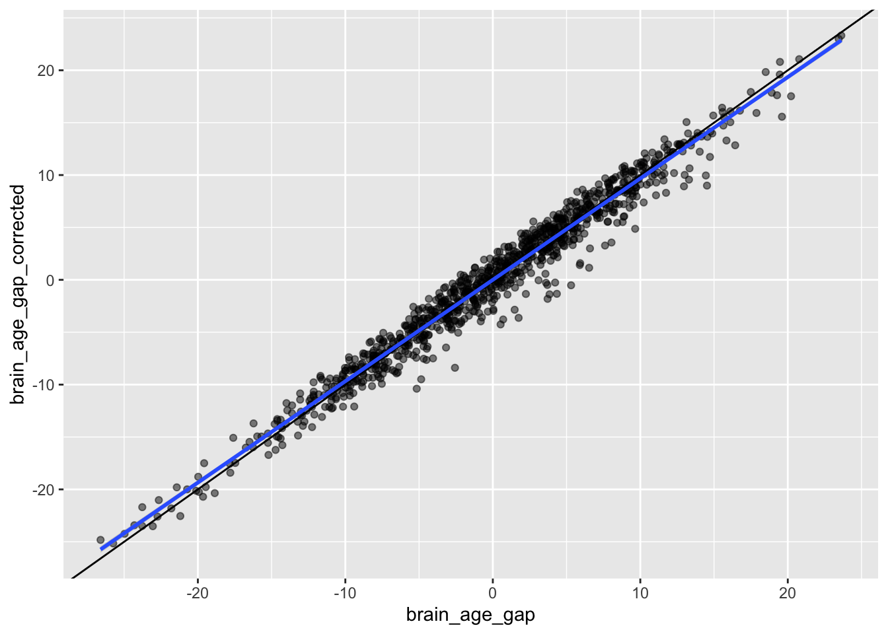

library(readr)
library(ggplot2)
library(dplyr)
library(tidyr)4 Brain Age
This starter kit walk through the “Brain Age” outputs that have been derived from the anatomical scans. The examples in the kit relies on bash and R.
4.1 Before Proposing Project
4.1.1 Confirm Sample Size
Not all participants in a release have imaging, and not all MRIs are of good quality. Before proposing a project, please confirm that a release will have a large enough sample size. Release 2.0.0 has 1017 participants for which Brain Age data have been extracted.
4.2 Starting Project
4.2.1 Locate data
In the release folder, data are stored underneath the mris/derivatives folder:
/corral-secure/projects/A2CPS/products/consortium-data/pre-surgery/mris/derivatives/brainager4.2.2 Extract data
Data for each participant is stored in a sub-directory.
$ ls | head
sub-10003
sub-10005
sub-10008
sub-10010
sub-10011
sub-10013
sub-10014
sub-10015
sub-10017
sub-10020For example1:
1 The tree command is just used here to display the folder structure, and is not required for you to have.
$ tree sub-10319
sub-10319
└── ses-V1
├── slicesdir_sub-10319_ses-V1_T1w.nii
│ ├── index.html
│ ├── _tmp_tmph17ksnl8_c1sub-10319_ses-V1_T1w.png
│ ├── _tmp_tmph17ksnl8_c2sub-10319_ses-V1_T1w.png
│ ├── _tmp_tmph17ksnl8_c3sub-10319_ses-V1_T1w.png
│ ├── _tmp_tmph17ksnl8_smwc1sub-10319_ses-V1_T1w.png
│ ├── _tmp_tmph17ksnl8_smwc2sub-10319_ses-V1_T1w.png
│ └── _tmp_tmph17ksnl8_smwc3sub-10319_ses-V1_T1w.png
├── sub-10319_ses-V1_T1w.m
├── sub-10319_ses-V1_T1w_tissue_volumes.tsv
└── sub-10319_ses-V1_T1w.tsv
2 directories, 10 filesMost users will be interested in the predicted ages, which can be found in sub-[recordid]/ses-[protocolid]/sub-[recordid]_ses-[protocolid]_T1w.tsv. For example
$ cat sub-10003/ses-V1/sub-10003_ses-V1_T1w.tsv
File brain.predicted_age lower.CI upper.CI
sub-10003_ses-V1_T1w 73.6037 72.9683 74.2392Here is an example of how these files could be loaded using R.
# list all files
files <- fs::dir_ls("data/brainager", glob = "*T1w.tsv", recurse = TRUE)
# read in all tsvs
ages <- readr::read_tsv(files)
ages# A tibble: 1,017 × 4
File brain.predicted_age lower.CI upper.CI
<chr> <dbl> <dbl> <dbl>
1 sub-10003_ses-V1_T1w 73.6 73.0 74.2
2 sub-10005_ses-V1_T1w 65.7 64.6 66.9
3 sub-10008_ses-V1_T1w 75.5 74.7 76.3
4 sub-10010_ses-V1_T1w 44.6 42.6 46.5
5 sub-10011_ses-V1_T1w 40.5 38.5 42.4
6 sub-10013_ses-V1_T1w 72.1 71.5 72.8
7 sub-10014_ses-V1_T1w 42.3 41.7 42.9
8 sub-10015_ses-V1_T1w 55.0 53.2 56.8
9 sub-10017_ses-V1_T1w 57.9 57.2 58.7
10 sub-10020_ses-V1_T1w 59.2 58.6 59.7
# ℹ 1,007 more rowsThe column File identifies the anatomical image that was used for to make the prediction. When working with other A2CPS data, it may be helpful to extract the subject ID.
ages_with_sub <- ages |>
dplyr::mutate(
sub = stringr::str_extract(File, "[[:digit:]]{5}") |> as.integer(),
)
ages_with_sub# A tibble: 1,017 × 5
File brain.predicted_age lower.CI upper.CI sub
<chr> <dbl> <dbl> <dbl> <int>
1 sub-10003_ses-V1_T1w 73.6 73.0 74.2 10003
2 sub-10005_ses-V1_T1w 65.7 64.6 66.9 10005
3 sub-10008_ses-V1_T1w 75.5 74.7 76.3 10008
4 sub-10010_ses-V1_T1w 44.6 42.6 46.5 10010
5 sub-10011_ses-V1_T1w 40.5 38.5 42.4 10011
6 sub-10013_ses-V1_T1w 72.1 71.5 72.8 10013
7 sub-10014_ses-V1_T1w 42.3 41.7 42.9 10014
8 sub-10015_ses-V1_T1w 55.0 53.2 56.8 10015
9 sub-10017_ses-V1_T1w 57.9 57.2 58.7 10017
10 sub-10020_ses-V1_T1w 59.2 58.6 59.7 10020
# ℹ 1,007 more rows4.3 Considerations While Working on the Project
4.3.1 Variability Across Scanners
Many MRI biomarkers exhibit variability across the scanners, which may confound some analyses. For an up-to-date assessment of the issue and overview of current thinking, please see Confluence.
4.3.2 Data Quality
As with any MRI derivative, all pipeline derivatives have been included. This means that products were included regardless of their quality, and so some products may have been generated from images that are known to have poor quality—rated “red”, or incomparable. For details on the ratings and how to exclude them, see Appendix A. Additionally, extensive QC has not yet been performed on the derivatives themselves, and so there may be cases where pipelines produced atypical outputs. For an overview of planned checks, see Confluence.
4.3.3 Calculating the Brain Age Gap
Predicted ages are neat, but these values are most useful when compared against a participant’s chronological age. These can be found in the demographics portion of the release.
baseline_ages <- read_csv(
"data/demographics/demographics-2025-01-10.csv",
col_select = c("record_id", "age")
)
brainage <- ages_with_sub |>
left_join(baseline_ages, by = join_by(sub == record_id)) |>
mutate(
brain_age_gap = brain.predicted_age - age
) |>
filter(!is.na(age)) # age not available for all participants
brainage# A tibble: 996 × 7
File brain.predicted_age lower.CI upper.CI sub age brain_age_gap
<chr> <dbl> <dbl> <dbl> <dbl> <dbl> <dbl>
1 sub-10003_se… 73.6 73.0 74.2 10003 73 0.604
2 sub-10005_se… 65.7 64.6 66.9 10005 58 7.73
3 sub-10008_se… 75.5 74.7 76.3 10008 73 2.49
4 sub-10010_se… 44.6 42.6 46.5 10010 64 -19.4
5 sub-10011_se… 40.5 38.5 42.4 10011 54 -13.5
6 sub-10013_se… 72.1 71.5 72.8 10013 71 1.14
7 sub-10014_se… 42.3 41.7 42.9 10014 45 -2.70
8 sub-10015_se… 55.0 53.2 56.8 10015 65 -9.98
9 sub-10017_se… 57.9 57.2 58.7 10017 56 1.95
10 sub-10020_se… 59.2 58.6 59.7 10020 53 6.17
# ℹ 986 more rowsBy plotting the predicted ages against the true ages, we can review the accuracy of the predictions.
lm_eqn <- function(fit) {
eq <- substitute(
italic(y) == a + b %.% italic(age) * "," ~ ~ italic(r)^2 ~ "=" ~ r2,
list(
a = format(unname(coef(fit)[1]), digits = 2),
b = format(unname(coef(fit)[2]), digits = 2),
r2 = format(summary(fit)$r.squared, digits = 3)
)
)
as.character(as.expression(eq))
}
fit <- lm(brain.predicted_age ~ age, data = brainage)
brainage |>
ggplot(aes(x = age, y = brain.predicted_age)) +
geom_abline() +
geom_point(alpha = 0.5) +
geom_smooth(method = "lm", formula = y ~ x) +
coord_fixed() +
geom_text(x = 40, y = 80, label = lm_eqn(fit), parse = TRUE)
The “brain age gap” is the difference between predicted and true age. Positive gaps indicate “older” brains, and younger gaps indicate “younger” brains.
brainage |>
ggplot(aes(x = brain_age_gap)) +
geom_histogram() +
xlab("(<-- Younger) Brain Age Gap (Older -->)")
4.3.4 Correction
Note that using the raw Brain Age Gap can be problematic, and, for final analyses, it is typical to calculate a derivative that has been “corrected”. The issue is that the predictions tend to be worse for the youngest and oldest people – and so the gap is related to age (e.g., a relationship with larger raw gaps partly reflects a relationship with true age).
brainage |>
ggplot(aes(x = age, y = brain_age_gap)) +
geom_point(alpha = 0.5) +
geom_smooth(method = "lm", formula = y ~ x) +
coord_fixed()
Corrections aim to make them independent, by, for example, residualizing. See Smith et al. (2019).
Smith, S. M., Vidaurre, D., Alfaro-Almagro, F., Nichols, T. E., & Miller, K. L. (2019). Estimation of brain age delta from brain imaging. Neuroimage, 200, 528–539. https://doi.org/10.1016/j.neuroimage.2019.06.017
bag_age_fit <- lm(brain_age_gap ~ age, data = brainage)
brainage |>
mutate(
brain_age_gap_corrected = residuals(bag_age_fit),
brain_age_gap = scale(brain_age_gap, scale = FALSE)
) |>
select(sub, brain_age_gap, brain_age_gap_corrected) |>
ggplot(aes(x = brain_age_gap, y = brain_age_gap_corrected)) +
geom_point(alpha = 0.5) +
geom_abline() +
geom_smooth(method = "lm", formula = y ~ x)
4.3.5 Other Models
There are many models for calculating Brain Age. The values that have been pre-calculated for A2CPS are derived from a model that has been around for a while and used successfully in a variety of studies (Biondo et al., 2022; Clausen et al., 2022; Hobday et al., 2022). For some analyses, it may be worthwhile to assess whether results persist across different models. For pain studies, one successful model has been DeepBrainNet (Bashyam et al., 2020; Montesino-Goicolea et al., 2023; Valdes-Hernandez et al., 2023), which can be used with derivatives from fMRIPrep.
Biondo, F., Jewell, A., Pritchard, M., Aarsland, D., Steves, C. J., Mueller, C., & Cole, J. H. (2022). Brain-age is associated with progression to dementia in memory clinic patients. NeuroImage: Clinical, 36, 103175. https://doi.org/10.1016/j.nicl.2022.103175
Clausen, A. N., Fercho, K. A., Monsour, M., Disner, S., Salminen, L., Haswell, C. C., Rubright, E. C., Watts, A. A., Buckley, M. N., Maron-Katz, A., et al. (2022). Assessment of brain age in posttraumatic stress disorder: Findings from the ENIGMA PTSD and brain age working groups. Brain and Behavior, 12(1), e2413. https://doi.org/10.1002/brb3.2413
Hobday, H., Cole, J. H., Stanyard, R. A., Daws, R. E., Giampietro, V., O’Daly, O., Leech, R., & Váša, F. (2022). Tissue volume estimation and age prediction using rapid structural brain scans. Scientific Reports, 12(1), 12005.
Bashyam, V. M., Erus, G., Doshi, J., Habes, M., Nasrallah, I. M., Truelove-Hill, M., Srinivasan, D., Mamourian, L., Pomponio, R., Fan, Y., et al. (2020). MRI signatures of brain age and disease over the lifespan based on a deep brain network and 14 468 individuals worldwide. Brain, 143(7), 2312–2324. https://doi.org/10.1093/brain/awaa160
Montesino-Goicolea, S., Valdes-Hernandez, P., Nodarse, C. L., Johnson, A. J., Cole, J. H., Antoine, L. H., Goodin, B. R., Fillingim, R. B., & Cruz-Almeida, Y. (2023). Brain-predicted age difference mediates the association between PROMIS sleep impairment, and self-reported pain measure in persons with knee pain. Aging Brain, 4, 100088. https://doi.org/10.1016/j.nbas.2023.100088
Valdes-Hernandez, P. A., Nodarse, C. L., Johnson, A. J., Montesino-Goicolea, S., Bashyam, V., Davatzikos, C., Peraza, J. A., Cole, J. H., Huo, Z., Fillingim, R. B., et al. (2023). Brain-predicted age difference estimated using DeepBrainNet is significantly associated with pain and function—a multi-institutional and multiscanner study. Pain, 164(12), 2822–2838. https://doi.org/10.1097/j.pain.0000000000002984
4.3.6 Methods, Citations
For additional documentation on the files and a detailed description of the methods, please see the official brainageR repo.